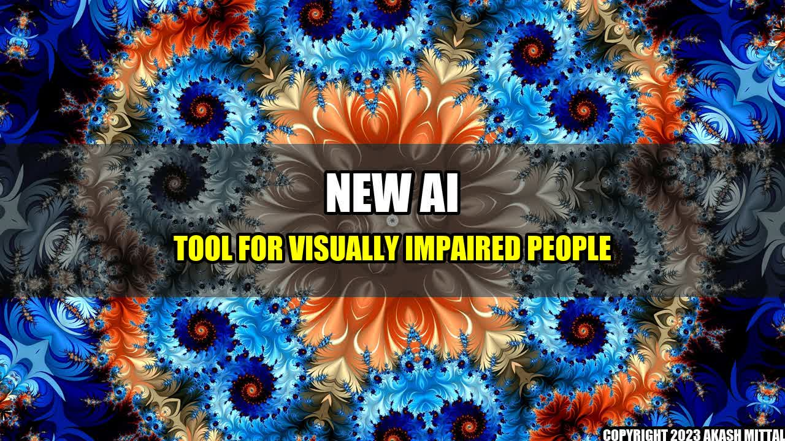

An Incredible Change: AI Tool That Describes Surroundings to Visually Impaired People

Meet John, a visually impaired person who uses a white cane to navigate his way. John loves to travel, but because he cannot see, he is unable to appreciate the beauty around him. Going to new places is always a challenge since he has to depend on others to describe his surroundings. But now, things have changed for John and for millions of visually impaired people around the world.
Thanks to artificial intelligence (AI), Google has developed a new tool that describes the surroundings to visually impaired individuals. The tool involves a phone camera and a set of headphones, and it works by using machine learning algorithms to recognize objects, read signs, and describe surroundings in a natural language.
Concrete Examples:
Imagine a visually impaired person walking towards an unfamiliar street. They can now point their phone camera to the street, and the AI tool will describe the surroundings to them in real-time that they could not see with their bare eyes earlier:
- "You are standing on the corner of Fifth Avenue and 42nd Street."
- "There is a crosswalk ahead of you."
- "There is a coffee shop on your right."
- "There is a bus stop across the road."
Conclusion in Three Points:
- This AI tool is a game-changer for visually impaired people. It enhances their independence and allows them to enjoy new experiences like never before.
- The benefits of AI technology are immense, and this tool is yet another example of how it can drastically improve the quality of life for people with disabilities.
- We look forward to seeing more innovative AI-based tools that help individuals with disabilities achieve greater independence and enjoy life.
References:
- New AI tool describes surroundings to visually impaired people - YouTube tag:google.com,2013:googlealerts/feed:16755598985102762826
Further Readings and Hashtags:
Author: Akash Mittal
Akash Mittal Tech Article
Share on Twitter Share on LinkedIn